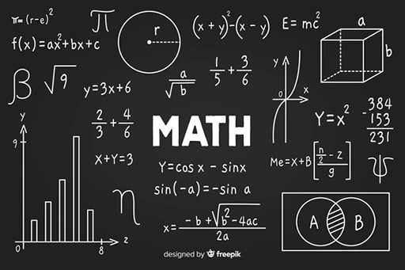

Los primeros lenguajes de programación preceden a la computadora moderna. En un inicio los lenguajes eran códigos.
La máquina del telar de Jacquard, creada en 1801, utilizaba los orificios en tarjetas perforadas para representar los movimientos de un brazo de la máquina de tejer, con el objetivo de generar patrones decorativos automáticamente.
Durante un período de nueve meses entre 1842 y 1843, Ada Lovelace tradujo las memorias del matemático italiano Luigi Menabrea acerca de la nueva máquina propuesta por Charles Babbage, la Máquina Analítica. Con estos escritos, ella añadió unas notas en las cuales especificaba en detalle un método para calcular los números de Bernoulli con esta máquina.
Herman Hollerith se percató de que podía codificar la información en tarjetas perforadas cuando observó a los conductores de trenes que identificaban a los pasajeros según el orificio que hacían en su respectivo ticket. En 1890, la máquina tabuladora de Herman Hollerith fue utilizada para procesar los datos del censo de Estados Unidos utilizando tarjetas perforadas.
Los primeros códigos de computadora estaban especializados según sus aplicaciones. En las primeras décadas del siglo XX, los cálculos numéricos estaban basados en los números decimales. Con el paso del tiempo, se dieron cuenta de que la lógica podía ser representada con números, no sólo con palabras. Por ejemplo, Alonzo Church fue capaz de expresar el cálculo lambda a través de fórmulas. La máquina de Turing estableció las bases para almacenar programas como datos en la arquitectura de von Neuman de una computadora. Sin embargo, a diferencia del cálculo lambda, el código de Turing no serviría satisfactoriamente como base para lenguajes de más alto nivel- su principal uso es en el análisis riguroso en la complejidad algorítmica.
Como muchos “primeros” en la historia, el primer lenguaje de programación moderno es difícil de identificar. Desde un inicio, las restricciones de hardware definían el lenguaje. Las tarjetas perforadas permitían 80 columnas, pero algunas de estas serían utilizadas para una clasificación de cada tarjeta. FORTRAN incluía algunas palabras reservadas provenientes del Inglés, como “IF”, “GOTO” (go to) y “CONTINUE”. El uso del tambor magnético para la memoria implicaba que los programas informáticos tuvieran que estar intercalados con las rotaciones del tambor. Por lo tanto los programas eran muy dependientes del hardware.
Para algunas personas, lo que sería el primer lenguaje de programación moderno depende de cuánto poder y legibilidad humana se requería antes de que se concediera el estado de "lenguaje de programación". Tanto el telar de Jacquard como la Máquina Diferencial de Babbage, tenían lenguajes muy simples y extremadamente limitados para describir las acciones que estas máquinas realizaran. Se puede incluso considerar los agujeros perforados en los rollos de pianola como un limitado lenguaje de dominio específico, a pesar de no estar diseñado para el consumo humano.
Categorías
Lengüajes de programación usados entre la época de los 80s y 90s categorizados.
Procedurales
- Ada
- Perl
- Tcl
Orientados a objetos
- C++
- Eiffel
- Objective-C
Funcionales
- Common Lisp
- Erlang
- FL (Backus)
Otros
- Matlab
- Mathematica

| Lenguaje | Categoría | Beneficios | Año | Popularidad actual | Área de uso |
|---|---|---|---|---|---|
| C++ | Orientado a objetos | Alto rendimiento, flexibilidad, control de hardware | 1980 | Alta (sistemas, juegos, software) | Desarrollo de sistemas, software de alto rendimiento |
| Ada | Procedural | Seguridad, robustez, ideal para sistemas críticos | 1983 | Moderada (aeroespacial, defensa) | Sistemas embebidos, defensa, aeroespacial |
| Common Lisp | Funcional | Expresividad, metaprogramación, manejo de listas | 1984 | Baja (investigación, IA) | Inteligencia artificial, investigación |
| MATLAB | Otras | Facilidad para cálculos numéricos, herramientas gráficas | 1984 | Alta (ingeniería, ciencia) | Computación científica, ingeniería |
| Eiffel | Orientado a objetos | Diseño por contrato, claridad, seguridad | 1985 | Baja (academia, nicho) | Desarrollo de software seguro |
| Objective-C | Orientado a objetos | Integración con Cocoa, desarrollo para Apple | 1986 | Moderada (legado en iOS/macOS) | Desarrollo de aplicaciones para Apple |
| Erlang | Funcional | Concurrencia, tolerancia a fallos, escalabilidad | 1986 | Moderada (telecomunicaciones, backend) | Telecomunicaciones, sistemas distribuidos |
| Perl | Procedural | Facilidad para procesamiento de texto, flexibilidad | 1987 | Moderada (legado, scripting) | Administración de sistemas, scripting |
| Tcl | Procedural | Simplicidad, integración con herramientas gráficas (Tk) | 1988 | Baja (legado, scripting) | Scripting, interfaces gráficas |
| Mathematica | Otras | Cálculos simbólicos, matemáticas avanzadas | 1988 | Moderada (investigación, educación) | Matemáticas, investigación científica |
| FL (Backus) | Funcional | Puramente funcional, enfoque en programación matemática | 1989 | Muy baja (academia) | Investigación en lenguajes funcionales |